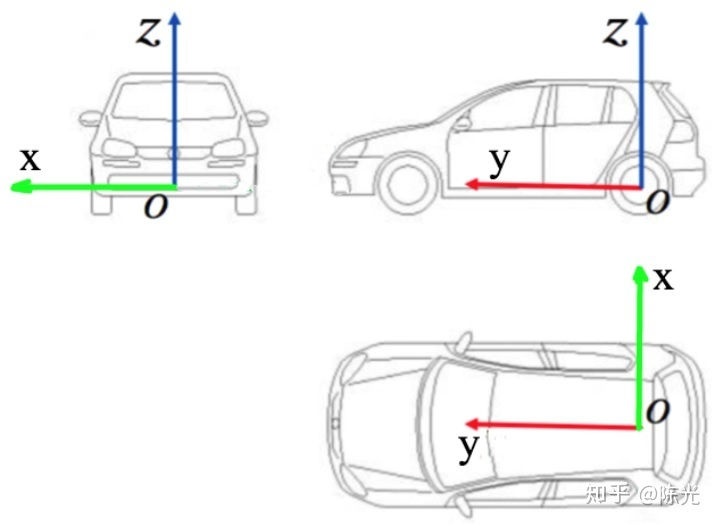
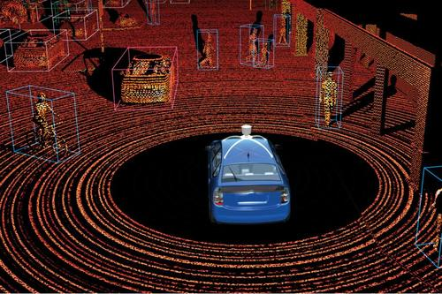

Ardupilot无人车仿真系统ROS与Gazebo基础使用¶
本章主要介绍，整个系统的框架和软件代码。上一章节我们介绍了系统如何使用，有一个初步的认识，仿真系统里面的操作。在上一个章节的基础之上理解这些系统是如何工作的，本章需要的系统知识有： ROS系统基础，C++，Python基础，多进程多线程的一些概念。有了这些概念，才可以理解整套体系是如何运作的，重要的搞清楚代码的模块的启动流程和代码模块之间的输入输出关系。
1.1 系统概述¶
ROS框架最大的好处就是给各个ROS节点(也可以理解为多线程或者多进程)，提供了一套标准的输入输出消息格式。通常大型复杂代码工程里面，多线程之间的消息共享和同步是比较复杂和难以设计的，ROS提供了一套通用的标准， 消息流的输入和输出，目前绝大部分的传感器设备厂商也逐步遵守ROS框架，发布了ROS驱动包，这样以来传感器的数据的输入输出就是标准化的了。做应用开发和算法开发的工程师就不需要关注传感器的驱动开发， 同时也有对应的三维仿真的平台，比如Gazebo，可以仿真无人机，无人车，人形机器人，机械臂等，提供了良好的测试开发手段。
1.2 Ardupilot无人车系统传感器介绍和系统消息流¶
惯性导航单元：陀螺仪，磁力计，加速度计。等外加GPS和一些位置传感器构成了无人车的状态估计系统。主要感知车辆航向，位置(全球坐标系和本地位置坐标系)，速度(X轴速度和Y轴速度，Z轴旋转角速度)，姿态(欧拉角)，
IMU指的是惯性测量单元。IMU大多用在需要进行运动控制的设备，如汽车和机器人上。也被用在需要用姿态进行精密位移推算的场合，如潜艇、飞机、导弹和航天器的惯性导航设备等。 惯性测量单元是测量物体三轴姿态角(或角速率)以及加速度的装置。一般的，一个IMU包含了三个单轴的加速度计和三个单轴的陀螺，加速度计检测物体在载体坐标系统独立三轴的加速度信号， 而陀螺检测载体相对于导航坐标系的角速度信号，测量物体在三维空间中的角速度和加速度，并以此解算出物体的姿态。

在真实环境中ardupilot的系统硬件里面包含的IMU这个惯性导航单元，通过mavlink协议可以读取到，在Rostopic中也可以读取到相关传感器的数据，在仿真环境中Gazebo也提供的相关传感器的数据，只是这些数据不是真实的， 是软件仿真出来的。
GPS/RTK：GPS是在开阔地带提供全球位置坐标的，IMU提供姿态数据，GPS主要提供位置数据，但是GPS受到环境遮挡等因素的影响，有时候需要IMU惯性单元来做补偿。
激光雷达：激光雷达是感知周围环境的，分为2D和3D，因为精度比较高，在无人系统中大量应用。用作地图构建和位置估计解算。

视觉传感器：摄像头的种类很多，主要是有视场角和分辨率的区别。
深度传感器：一般的双目深度传感器，英特尔的realsense的深度传感器用的比较多，但是只是适合用在小型无人系统上面，大型无人车不适合。
1.3 GUDIDE模式自动驾驶例程分析¶
对于上面讲述的状态估计，环境感知，路径规划可以先不用深入了解，最基本的就是可以通过一些接口函数让无人车可以动起来，比如以期望的速度行驶，还有行驶到一个期望的位置点。是自动行驶的基础条件。 任何自动驾驶都可以理解为以期望的速度行驶和行驶到一个期望的位置点。
- 系统接口流程：

ROS系统是支持多种语言编写代码的比如：C语言/C ++语言，Python。我们这里介绍Python的接口，Python发布的期望的速度和位置，如何进入无人车进行执行的。 从python或者C++ 的节点，到MAVROS，到MAVLINK，到PID算法到驱动控制器。
发布期望的位置python脚本：
以一定的频率发送期望的位置，控制系统在GUIDE模式下，就可以行走到期望的位置。
1.4 无人车激光雷达壁障流程分析(VFH算法)¶
；
1.5 自定义Gazebo世界环境¶
；